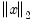

|
|
|
When you estimate an equation in EViews, you enter specification information into the Specification tab of the Equation Estimation dialog. Clicking on the Options tab displays a dialog that allows you to set various options to control the estimation procedure. The contents of the dialog will differ depending upon the options available for a particular estimation procedure.The default settings for the options will be taken from the global options (“Estimation Defaults”), or from the options used previously to estimate the object.The Options tab for binary models is depicted here. For other estimator and estimation techniques (e.g. systems) the dialog will differ to reflect the different estimation options that are available.A majority of the EViews nonlinear estimators offer you the choice of optimization method. For these estimators, the Optimization method dropdown menu lets you choose between the BFGS, Gauss-Newton, Newton-Raphson, and EViews Legacy methods. The default method is estimator specific.The Step method allow you to choose the approach for choosing candidate iterative steps. The default method is Marquardt, but you may instead select Dogleg or Line Search.See “Optimization Algorithms” for extensive discussion.
is the vector of parameters,  is the 2-norm of
, and tol is the specified tolerance. However, before taking the norms, each parameter is scaled based on the largest observed norm across iterations of the derivative of the least squares residuals with respect to that parameter. This automatic scaling system makes the convergence criteria more robust to changes in the scale of the data, but does mean that restarting the optimization from the final converged values may cause additional iterations to take place, due to slight changes in the automatic scaling value when started from the new parameter values.
The estimation process achieves convergence if the stopping rule is reached using the tolerance specified in the Convergence edit box of the Estimation Dialog or the Estimation Options Dialog. By default, the box will be filled with the tolerance value specified in the global estimation options, or if the estimation object has previously been estimated, it will be filled with the convergence value specified for the last set of estimates.Lastly, EViews may converge, but warn you that there is a singularity and that the coefficients are not unique. In this case, EViews will not report standard errors or t-statistics for the coefficient estimates.